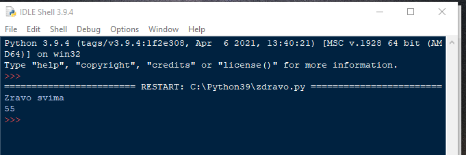
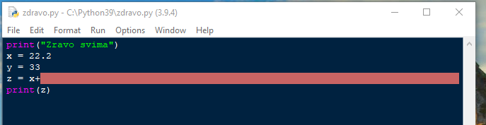
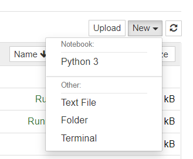
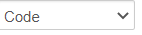

Python okruženje
Na ovom času obradićemo sledeće teme:
Instalacija i pokretanje Pythona
Uvod u Jupyter Notebook
Pomoć i drugi resursi
Instalacija i pokretanje Python-a
Za instalaciju Pythona na Windows platformi dovoljno je da preuzmete instalacioni program sa adrese https://www.python.org/downloads/windows/ i pokrenete ga.
Kada na svoj računar instalirate Python 3, dobijate i jedno jednostavno ali upotrebljivo okruženje poznato kao IDLE.
Postoji mnogo načina da se izvršava Python kod (upoznaćete još jedno na ovom kursu), IDLE je sve što vam je potrebno kada tek počinjete
IDLE
Pokretanjem IDLE-a dobijamo prozor kao na slici

Idle
S obzirom da je Python intepreter (može da izvršava liniju po liniju koda), na mestu gde se vidi >>> očekuje se da napišete prvu instrukciju
Poslednja verzija (u treuntku pisanja ovog slajda) je Python 3.11.4 (primetite da je slika 3.9)
Pa krenimo …
Ukucajte print("Ovo je moj prvi kod u Pythonu")
i pritisnite taster Enter
print("Ovo je moj prvi kod u Pythonu")
Ovo je moj prvi kod u Pythonu
Ukucajte sada 32+12
32+12
44
Izvršavanje jedne ili više naredbi istovremeno [Skripte (.py - datoteke)]
Pokrenite IDLE, a zatim upotrebite opciju menija File… -> NewFile da otvorite nov prozor za uređivanje.
Kad smo to uradili na našem računaru, dobili smo dva prozora, jedan se zove Python Shell, a drugi Untitled:

Skripta
Prvi prozor koristi se za izvršavanje isečaka Python koda, jednu po jednu naredbu
Prozor Untitled, je prozor za uređivanje teksta, koji može da se koristi za pisanje celih Python programa
Hajde da upišemo jedan mali Python program u ovaj prozor. Kad završite sa upisivanjem sledećeg koda, upotrebite opciju sa menija File…-> Save As da sačuvate ovaj program pod imenom zdravo.py
Pazite da upišete kod kako ovde stoji:

Šta sad?
Dovoljno je da pritisnete samo taster F5 na tastaturi.
Mogu se dogoditi različite stvari.
Ako se vaš kod izvršava bez greške, rezultat se prikazuje u Python Shell-u
{kind=link}

Ako ste zaboravili da sačuvate kod ili promenu koda pre nego ga izvršite IDLE će se buniti. Svaki novi kod morate da sačuvate u fajl, pre nego ga pokrenete.

Ako negde imate grešku sintakse, ugledaćete ovu poruku

Pritisnite dugme OK, zatim pogledajte gde IDLE misli da se greška sintakse nalazi. Tražite veliki crveni okvir u prozoru za uređivanje
{kind=link}

Jupyter notebook
Jupyter notebook je open-source web aplikacija koja nam omogućava da kreiramo i delimo dokumente koji sadrže live kod, jednačine, vizuelizaciju i narativni tekst.
Moguća je samostalna instalacija, ali mi ćemo ga preuzeti iz besplatne aplikacije Anaconda koja se može skinuti sa adrese https://www.anaconda.com/products/individual-d - U meniju
Homenalaze se različita programerska okruženja, među kojima je i Jupyter notebook za rad u Pythonu - U menijuLearningje odlična dokumentacija i reference kao pomoć u učenju (probajmo …)

Anaconda
Jupyter - prvo pokretanje
Pokretanjem Jupyter notebook-a u Anacondi kreiramo u podrazumevanom browseru kontrolnu tablu za notebook-ove.
Odatle možemo da kreiramo/otvaramo/povlačimo foldere/datoteke/notebook-ove i biramo jezgro (kernel).

Kreiranje novog notebooka
U našem slučaju biramo u meniju
New…Notebook:Python 3
{kind=link}

Kreirana datoteka ima ekstenziju
.ipynb(IPythonNotebook).Datoteku ovog tipa mogu pokrenuti i druga okruženja od kojih su najpoznatija
PyCharm
Google Colab
Napomena: Ako u meniju New izaberemo file, možemo da kreiramo različite tekstualne datoteke. (.txt, .py, .csv … )
Jupyter Notebook ćelije
Sadržaj notebook-a uređuje se ćelijama.
Tip ćelije može biti:
Code, Markdown, Raw(kod, uređeni tekst, sirov tekst)Tip ćelije određuje se
iz menija
Cell -> Cell Type

ili selektovanjem ćelije + taster Y/M/R
Podrazumevani tip ćelije je
Code
Pisanje teksta i izvršavanje koda u Jupyteru
Ćelija je u Edit modu ako je njen okvir obojen u zeleno. Tada možemo da menjamo njen sadržaj.
Ćelija je u komandnom modu ako je njen okvir obojen plavo. Tada možemo da prevodimo njen sadržaj ili izvršavamo kod u njoj.
Jedan klik na neaktivnu ćeliju prebacuje je u komandni mod.
U u edit mod prelazimo sa dva brza dvoklika na ćeliju.
Izlaskom iz ćelije čuva se njen mod.
Uvek se „prevodi” aktivna ćelija. (ima zeleni okvir ili plavi okvir)
U zavisnosti od tipa ćelije dobijamo rezultat programa ili tekst.
Sadržaj ćelije „prevodimo”/ izvršavamo klikom na dugme ► ili
Ctrl + Enterili preko menija.Sadržaj celog notebook-a i reset jezgra izvršava se pritiskom na dugme ►►
Komandne (Code) ćelije
U komandnoj ćeliji pišemo jednu ili više Python naredbi ili čak cele programe.
Izvršavamo ih preko menija ili preko tool-bara jednostavno klikom na dugme ►
print("Zdravo svima")
Zdravo svima
Tekst (Markdown) ćelije
To su ćelije u kojima pišemo tekst vezan za problem koji rešavamo
Koristimo sintaksu Markdown-a, html-a i LaTeX-a
Ako u ćeliju unesemo Ovo je formula napisana u LaTeX-u $$\frac12 +\int_1^2\cos x\, dx$$ i prevedemo je sa Run ili dugmeta dobićemo na izlazu:
Ovo je formula napisana u LaTeX-u $\(\frac12 +\int_1^2\cos x\, dx\)$
Slično, ako unesemo html - Ovaj tekst je <strong><em> vrlo važan <em></strong>. i prevedemo dobijamo:
html - Ovaj tekst je vrlo važan .
Konačno, ako u unesemo Markdown - Ovaj tekst je ***vrlo važan***. i prevedemo dobijamo:
Markdown - Ovaj tekst je vrlo važan.
Markdown je postao dovoljno moćan da je u njemu moguće danas pisati i knjige
Nekoliko kratkih komandi:
između zvezdica će vam tekst biti italik
između dve zvezdice tekst će biti bold
Detaljnije informacije o uređivanju teksta u Markdown-u možete pogledati OVDE
Skraćenice sa tastature
Čuvanje notebook-a:
sPromena tipa ćelije:
y, m, 1-6, tKreiranje ćelije:
a, bEditovanje ćelije:
x, c, v, d, zKernel operacije:
i, 0(pritisnuti dva puta)
Instaliranje eksternih paketa
Za korišćenje nekih modula neophodno je da prvo instaliramo/uvezemo eksterne biblioteke. Uvoženje eksterne biblioteke može se
uraditi pokretanjem pip modula iz jupyter komandne ćelije
pip install numpy- instalira biblioteku numpy koja nije deo standardnog paketa Pythona na naš računar.pip install pandas- instalira biblioteku pandas koja nije deo standardnog paketa Pythona na naš računar
Napomena: Ako Python instaliramo preko Anaconde, biblioteke Numpy, Pandas i Matplotlib su već instalirane
pip install numpy
Requirement already satisfied: numpy in c:\users\dragan azdejkovic\miniconda3\envs\jb1\lib\site-packages (2.2.6)
Note: you may need to restart the kernel to use updated packages.
Pokretanje skripti (eksternog koda)
Vratimo se u osnovni meni jupytera i kreirajmo datoteku pozdrav.py sa sledećim sadržajem:
print("Pozdrav svima")
a = 2.1
b = 34.23
c = a + b
print(c)
Datoteke oblika ime_datoteke.py zovemo skripte i možemo da ih izvršimo iz komandne ćelije (pod uslovom da su u istom folderu kao i radna ipynb datoteka ili navođenjem kompletne putanje) sa:
%run pozdrav.py
%run pozdrav.py
Pozdrav svima
36.33
Eksterni resursi
Besplatnu pomoć u programiranju kao i veliki broj različitih podataka možemo naći na sledećim adresama
https://www.w3schools.com/python/
https://www.kaggle.com pored podataka (za šta sajt primarno služi) imate niz materijala za učenje. Verovatno i najbolji izvor za sve napredne tehnike
https://edube.org/ - platforma za učenje i pripremu testova zvanične Python sertifikacije
https://realpython.com/
Ogroman broj kurseva nalazi se na dobro poznatim obrazovnim platformama. Kursevi na ovim platformama mahom nisu besplatni
https://www.coursera.org/ sadrzi niz početnih kurseva o Python-u. Iako se većina plaća, studenti iz Srbije uz upit mogu dobiti besplatan pristup
https://www.udemy.com/
https://stackskills.com/
Naravno, pored toga tu su forumi i platforme gde možete naći odgovore na svako pitanje koje vam padne na pamet
https://stackoverflow.com/ je forum na kojem imate odgovore na verovatno sva pitanja koja možete postaviti tokom semestra
https://github.com/ sadrži puno kodova (pogledajte kakav je ovaj sajt i njegovu namenu, može vam biti koristan u budućnosti)
Ma kako zvučalo, ne zaboravite da je Google (i svi njegovi proizvodi) najbolje mesto da započnete pretragu svakog problema